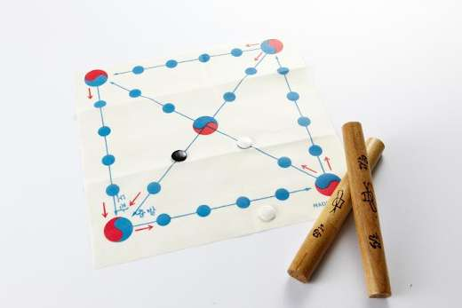
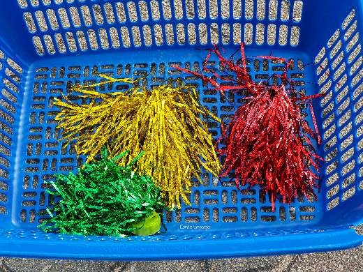
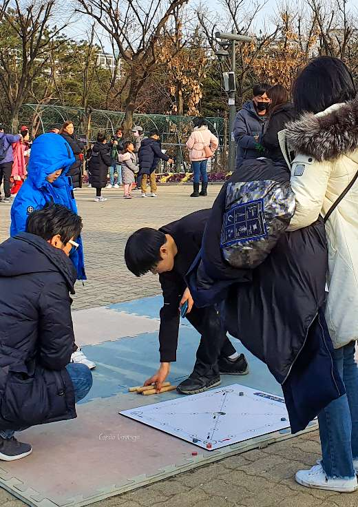
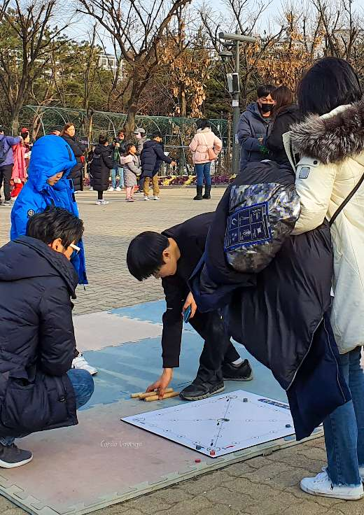
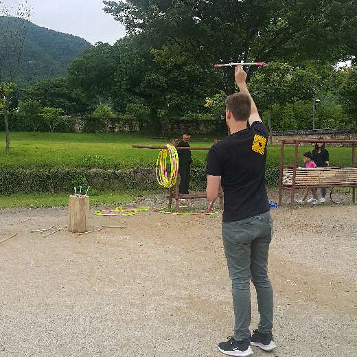

Jeux traditionnels pendant Seollal
La fête de #Seollal (설날) vient de se terminer et vous vous demandez peut-être comment les Coréens ont célébré le nouvel an lunaire ? Après avoir préparé à manger pour le rite des ancêtres (Charye/차례), s’être prosterné devant les anciens pour leur souhaiter la bonne année (Sebea / 세배), avoir reçu les étrennes (Sebedon/세뱃돈), et dégusté la soupe de gâteux de riz (Tteokguk / 떡국), il est coutume de passer du temps en famille et jouer à des jeux traditionnels. On vous en présente quelques-uns !
Yut-Nori (윷놀이)
Photos : Yut-Nori et Jegichagi
Photos by ©jeanne


Photos by ©jeanne
Le Yut-Nori ressemble à notre jeu des petits chevaux, dans lequel les dés sont remplacés par 4 bâtons en bois (장작윷). C’est le jeu le plus populaire de Seollal.
Il se joue sur un plateau où l’on doit faire avancer son pion jusqu’à revenir au point de départ. Le premier qui y arrive à gagner. On peut avancer selon le nombre de points que l’on reçoit en lançant les bâtons. Si un stick est retourné à l’envers (la partie gravée contre le sol), on avance d’une case, deux sticks à l’envers, deux cases, etc. Facile ? Attention ! Pour pimenter le jeu, il est possible de prendre des raccourcis ou reculer de plusieurs cases.
Inspiré du confucianisme, le circuit du plateau représente les quatre saisons, les étoiles et, en son centre, l'étoile du nord.
Jegichagi (제기차기)
Photos : Yut-Nori et Jegichagi
Photos by ©jeanne
 

Photos by ©jeanne
Le Jegichagi est un jeu d’adresse qui consiste à faire des jongles comme au foot mais avec un volant appelé Jaegi (제기). Traditionnellement, le Jaegi était fabrique à partir d’une pièce de monnaie enroulée dans du papier Hanji. On peut jouer seul ou en groupe, le but étant bien sûr de ne pas laisser tomber le volant au sol. On aurait retrouvé des traces de ce jeu dans les Trois Royaumes, ce qui le rendrait millénaire !
Yeonnalligi (연날리기)
Photos by ©jeanne
Ou tout simplement le cerf-volant. Après avoir joué, on écrit le mot 送厄迎福 (송액영복 / « Envoyer la malchance et accueillir la chance ») sur le cerf-volant et on coupe la ficelle pour le laisser s’envoler au coucher du soleil. Cette pratique remonterait au royaume de Silla. Une étoile serait tombée du ciel et aurait effrayé la reine Jindeok. Le général Kim Yushin eu l'idée de fabriquer une sorte d’épouvantail accroché à une ficelle et de le faire voler pour donner l’illusion que l'étoile repartait dans le ciel.
Neolttwigi (널뛰기)
Photos by wikimedia
Le Neolttwigi est un jeu similaire à la balançoire mais pour deux personnes. On se tient debout, de part et d’autre d’une planche à bascule et on saute chacun son tour. On dit que ce jeu était pratiqué par les jeunes femmes de la haute classe de la dynastie Joseon (Yangban / 양반). Puisqu’elle ne pouvaient pas sortir de chez elles, sauter sur cette planche leur permettait de voir par dessus le mur !
Autres jeux traditionnels
Il existe encore bien d’autres jeux tels que le Paeingichigi (파엔기치기) une petite toupie, le #Gonggi (공기놀이) très similaire à nos osselets, le #Tuho (투호놀이) qui consiste à lancer des flèches dans un vase ou le célèbre #Go Stop (고스톱) jeu de cartes qui date du 19ème siècle.
Photos : le Paeingichigi et le Tuho
Photos by ©jeanne


Photos by ©jeanne


Photo : le Go Stop
Photo by ©jeanne

Photos by ©jeanne
Photos by ©jeanne
Photo by ©jeanne